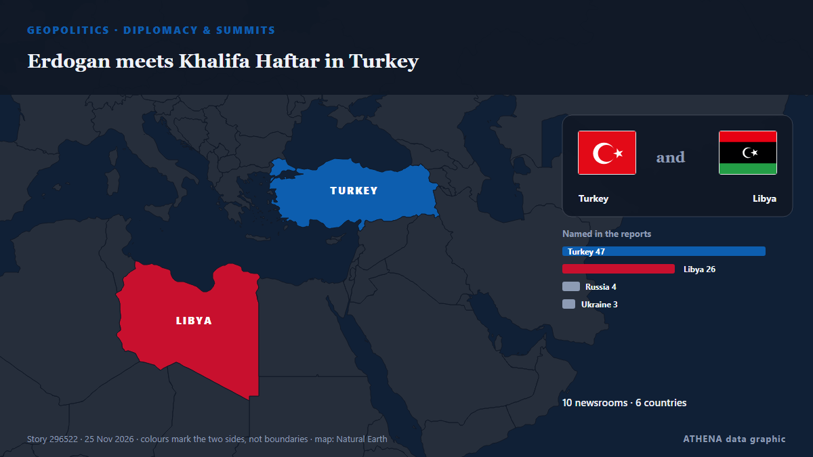

Diplomacy & summits
SponsoredPresented by  Cybernetics and Artificial Intelligence Lab Welcome to the Cybernetics and Artificial Intelligence Laboratory, established at the Department of Business Administration of the National and Kapodistrian University of Athens. The lab is headed by Professor Dimitrios Thomakos. The lab aims to do research that can be published in top venues. Our research uses tools and methods of Artificial Intelligence, and lies in the following areas: - Forecasting - Decision making - Cyber security - Finance We are always looking forward to collaborating with exceptional students!
Cybernetics and Artificial Intelligence Lab Welcome to the Cybernetics and Artificial Intelligence Laboratory, established at the Department of Business Administration of the National and Kapodistrian University of Athens. The lab is headed by Professor Dimitrios Thomakos. The lab aims to do research that can be published in top venues. Our research uses tools and methods of Artificial Intelligence, and lies in the following areas: - Forecasting - Decision making - Cyber security - Finance We are always looking forward to collaborating with exceptional students!
| 12 Nov | 0 |
|---|---|
| 13 Nov | 0 |
| 14 Nov | 0 |
| 15 Nov | 0 |
| 16 Nov | 1 |
| 17 Nov | 1 |
| 18 Nov | 0 |
| 19 Nov | 1 |
| 20 Nov | 1 |
| 21 Nov | 1 |
| 22 Nov | 7 |
| 23 Nov | 6 |
| 24 Nov | 3 |
| 25 Nov | 0 |

Erdogan meets Khalifa Haftar in Turkey
The visit follows eastern Libya’s approval of a maritime agreement opposed by Athens, Brussels and Cairo, while Turkish President Recep Tayyip Erdogan is preparing to travel to Tripoli in December. from To Vima (English)
Putin says Ukraine hits Russian oil plants despite Trump's requests, promises retaliation
MOSCOW, Nov 24 - Ukraine has continued attacks on Russian oil refineries despite requests from US President Donald Trump to refrain, Russian leader Vladimir Putin said on Tuesday, pledging to… from The Straits Times
Eisenkot invites Netanyahu's Likud for Israeli coalition talks
JERUSALEM: Gadi Eisenkot, who is tasked with forming the next Israeli government, has invited the right-wing Likud party of caretaker prime minister Benjamin Netanyahu for coalition talks, his party… from New Straits Times
Hungarian PM says he hosted refugees from Zakarpattia Oblast
Prime Minister Péter Magyar says Hungary has provided refuge to tens of thousands of Ukrainians since Russia's full-scale invasion, including many ethnic Hungarians. from Ukrainska Pravda (English)
Ireland hit with more bomb threats as security preparations ramp up for EU summit
Dublin is preparing for the largest gathering of heads of state and government ever hosted by Ireland. from TheJournal.ie
Iran summons Qatari diplomat over joint statement
The Kuwaiti Ministry of Foreign Affairs summoned the Iranian ambassador on Wednesday, October 27, to protest a statement released by the ... from IranWire
US army says detonation of lead explosives in Iowa will proceed
Public outcry led to a legal battle when details of the plans to conduct two controlled detonations surfaced. from Al Jazeera English
Kenya and DR Congo agree to restore diplomatic ties after tensions over conflict
By Nana Karikari, Senior International Affairs and Political Analyst Kenyan President William Ruto and Democratic Republic of Congo President Felix Tshisekedi agreed on Sunday to restore full… from GBC Ghana Online
Qatar PM looks to revive US-Iran talks after meeting Rubio
Qatar’s Prime Minister says he’s working towards deescalating tensions between Iran and the US. from Al Jazeera English
China, US and Russia leaders pledge to boost refined fuel output
Three nations commit to raise fuel supply Declaration lays out areas of cooperation China, the US and Russia plan to. from Cyprus Shipping News
UN Chief Calls for Global AI Risk Framework Within a Year
UN Secretary-General Antonio Guterres on Monday, Nov. from Kyiv Post
India pledges $1.6bn to Nepal in reset of ties
Nepal’s Prime Minister Balen Shah has repeatedly called for his country to be treated as an equal by its powerful neighbours. from The Island
Zelensky urges four-way peace talks with Russia, Europe and US 'as soon as possible'
Ukrainian President Volodymyr Zelensky is calling for a new round of negotiations involving Ukraine, Russia, the United States and European leaders, saying Kyiv is ready to meet as early as Tuesday. from France 24 English
Ukraine sank Russian corvette Merkury off Libya: Zelenskyy
A Russian Navy guided-missile corvette – assessed to be the Project 20380 Steregushchiy-class warship Merkury – has been engulfed in flames following an explosion in the Libyan port of Benghazi… from Kyiv Post
Fake Trump ribs Carney at press gallery dinner
A Donald Trump impersonator took to the stage at Ottawa's annual Parliamentary Press Gallery Dinner on Saturday, poking fun at Canadian Prime Minister Mark Carney. from The Globe and Mail
Nepal PM Balendra Shah arrives in Delhi for first official visit to India
The PMs of India and Nepal are set to hold talks on Monday, with sources saying the discussion will give 'political direction' to bilateral relations for the coming years. from The Hindu
India announces Rs 15,000 crore for flood-hit Nepal, PM Balendra Shah hails ties 'as firm as Himalayas'
Prime Minister Narendra Modi on Monday announced a package about Rs 15,000 crore for Nepal's post-flood reconstruction and development, saying the two countries are a source of support for each other… from Deccan Herald
Kim Jong Un ignores Trump outreach as North Korea expands its nuclear arsenal
Trying to reach Kim Jong Un, White House officials stationed a team outside North Korea’s mission to the United Nations in Manhattan to slip a personal note from Donald Trump into a passing… from Tehran Times
US Intelligence Chief Says Putin Is 'Not America's Friend In Ukraine'
Trump’s description of Putin as a friend during the APEC summit drew criticism from European allies of Ukraine. from The Straits Times